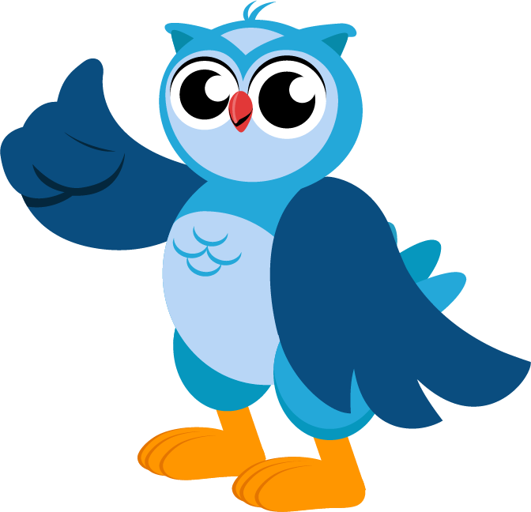
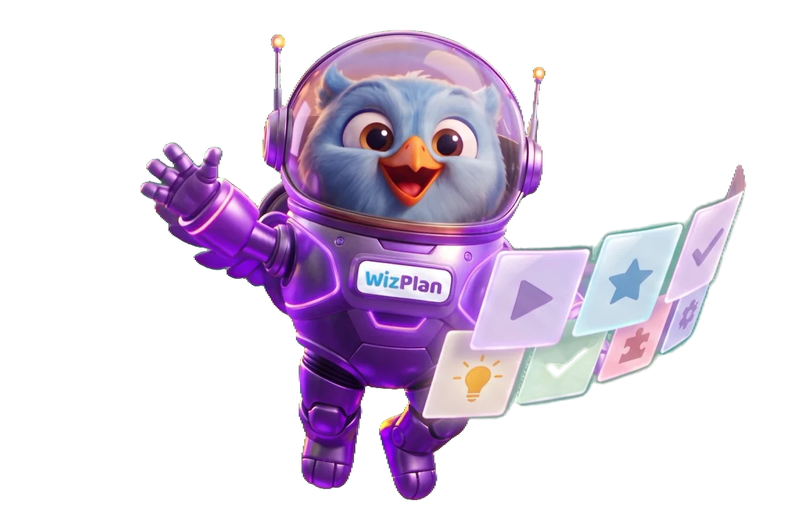
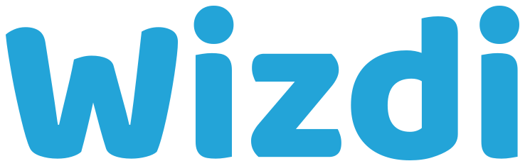
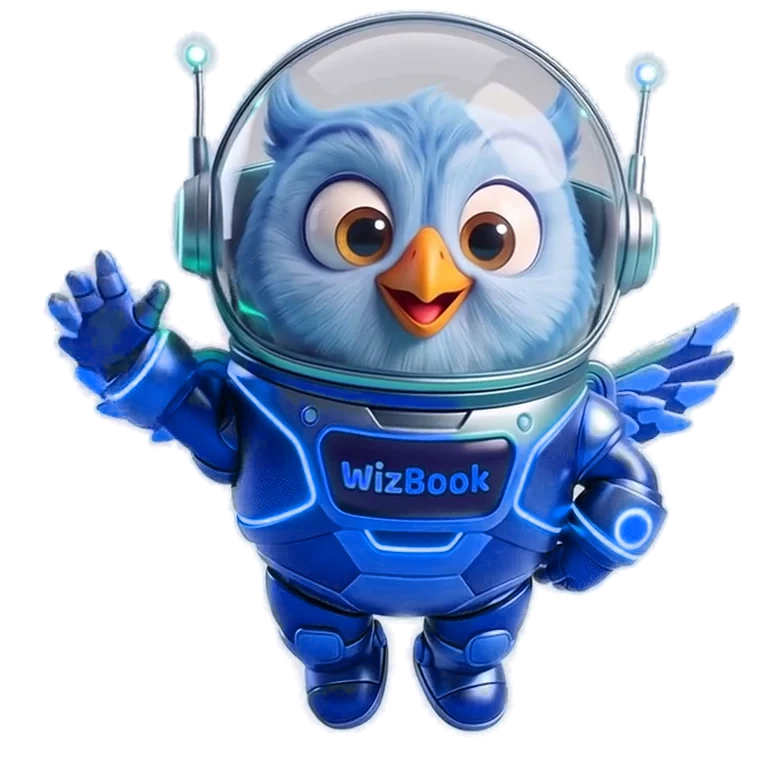
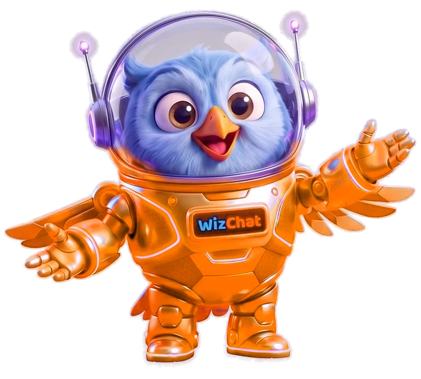

המילה Wizdi תמיד באותיות לטיניות, בכחול #23A4D8, מתוך תווי Baloo. לעולם לא וויזדי, לעולם לא באותיות גדולות.

Wizi התלת-ממדי — בחליפה בצבע המודול
wordmark ·logos/wizdi-wordmark.svgכל לוגו מצויר מהתווים האמיתיים (logos/wiz/*.svg) ומופיע כמו באתר: הקו נמשך, המילוי עולה, הקו נעלם. לחצי «לנגן שוב» כדי לראות.
הספרים שאתם מכירים.
כוחות שעוד לא ראיתם.
למידה בקצב אישי, בלי שיפוטיות
Fredoka · משתנה 300–700 · תת-קבוצה עברית · 8.8KB
WizPlay · WizBook · ב-Wizdi · 672 · 24/7 · AI
Baloo Latin · כל אות לטינית, ספרה וסימן פיסוק. מגיע אליה לבד דרך unicode-range, בלי לסמן טקסט.
font-family: "Baloo Latin", "Fredoka", ui-rounded, system-ui, sans-serif;
/* Baloo Latin FIRST (latin range), Fredoka right after (hebrew range). Never the other way. */

הספר החי שמשנה את הלמידה

סוכן למידה ושיח אישי
מערך שיעור שלם. מוכן להקרנה בקליק.
רקע PopBG של המודול (references/popbg/) והינשוף התלת-ממדי בצבע שלו (references/wizi/modules/). הפוסטרים הישנים בצבעים הקודמים נמצאים ב-references/legacy/ בלבד.
| שלב | משך | ease | הערה |
|---|---|---|---|
| טריגר | כניסה למסך, 35 % | — | פעם אחת. השהיה של 1.1 שניות כדי לא לרוץ יחד עם לוגו הכותרת. |
| הקו נמשך | 2.4 שניות | power2.inOut | stroke-width 3, מילוי 0 |
| המילוי עולה | 1 שנייה | power2.out | מתחיל 0.5 שנייה לפני סוף הקו |
| הקו נעלם | 0.7 שנייה | power2.out | מתחיל 0.6 שנייה לפני סוף המילוי |
| לוגו Wizdi בכותרת | קו 1.6 · מילוי 0.7 (−0.3) · קו נעלם 0.45 (−0.45) | אותו דבר | בלי השהיה, stroke-width 1.6 (data-fast="1") |
| prefers-reduced-motion | 0 | — | לוגו מלא מיד. גם בלי JavaScript. |
| תנועה בממשק | ≤ 300ms | ease-out | לחיצה scale(.985), לעולם לא scale(0) |